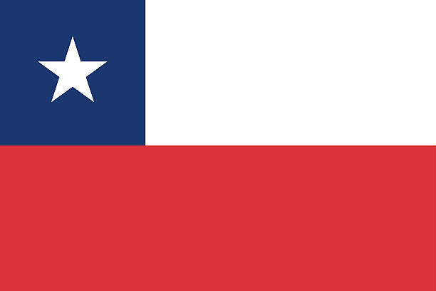
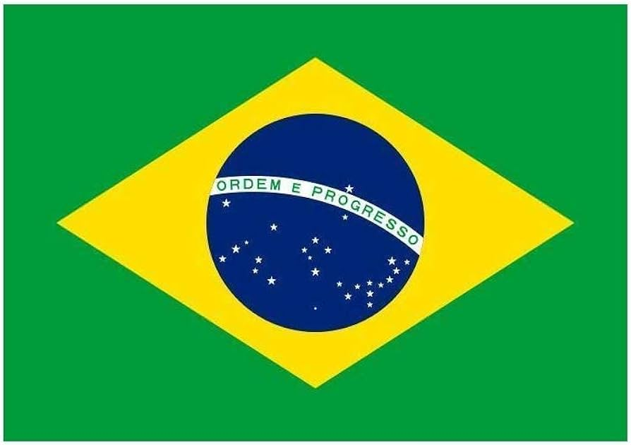

Descubre la Educación Biocéntrica
Haz click para conocer sus pilares funtamentales.
Transformando Vidas a Nivel Mundial
Descubre cómo la educación biocéntrica y sus actividades están impactando comunidades y mejorando el bienestar en diversos rincones del planeta.
-
Reducción del Estrés en Japón
En Japón, empresas como Toyota y Sony han incorporado la biodanza como parte de sus programas de bienestar laboral. Trabajadores de estas compañías participan en sesiones de biodanza durante sus jornadas laborales, lo que ha resultado en una notable reducción del estrés, aumento de la productividad y mejora en el ambiente laboral. En Toyota, por ejemplo, las sesiones de biodanza se realizan dos veces por semana y han sido especialmente efectivas en la reducción del estrés entre los empleados de las líneas de producción. Por su parte, en Sony, la biodanza se ha integrado en los programas de bienestar corporativo, promoviendo un ambiente de trabajo más colaborativo y armonioso.
-

Implementación en Colegios Chilenos
En Chile, varios colegios han adoptado la educación biocéntrica como parte de su currículo. Por ejemplo, el Colegio Ciudad Educativa de la Florida integra prácticas de biodanza en sus programas de educación física y desarrollo emocional. Los estudiantes participan en sesiones semanales de biodanza, lo que ha mejorado notablemente en una mayor su cohesión grupal, autoestima y rendimiento académico.
-

Recuperación de Pacientes Psiquiátricos en Brasil
En hospitales psiquiátricos de Brasil, la biodanza ha sido utilizada como una terapia complementaria para pacientes con trastornos mentales. Estudios han demostrado que las sesiones de biodanza han ayudado a mejorar el estado de ánimo, la socialización y la calidad de vida de los pacientes, facilitando su recuperación y reintegración social.
-
Proyectos de Sostenibilidad en Italia
En Italia, la educación biocéntrica se ha implementado en proyectos de sostenibilidad en escuelas primarias y secundarias. Uno de estos proyectos, llevado a cabo en la Scuola Primaria Francesco Crispi en Milán, incluye la creación de huertos escolares y la enseñanza de técnicas de agricultura ecológica. Los estudiantes, de entre 6 y 11 años, participan activamente en todas las etapas del cultivo, desde la siembra hasta la cosecha.
Este proyecto ha resultado en un incremento del 30% en la participación y motivación de los alumnos en actividades escolares relacionadas con ciencias y ecología. Además, los huertos escolares han producido más de 500 kg de vegetales frescos al año, los cuales son utilizados en las comidas escolares, promoviendo una alimentación saludable. A través de esta experiencia práctica, los estudiantes no solo aprenden sobre biología y ecología, sino que también desarrollan un profundo sentido de responsabilidad hacia el medio ambiente, reforzando los valores de sostenibilidad y cooperación.
-
Programas Comunitarios en Sudáfrica
En Sudáfrica, la biodanza ha sido utilizada en programas comunitarios para apoyar a personas afectadas por el VIH/SIDA. En ciudades como Ciudad del Cabo, organizaciones como el Desmond Tutu HIV Foundation han integrado la biodanza en sus programas de apoyo. Las sesiones de biodanza, realizadas semanalmente, han ayudado a los participantes a mejorar su salud mental, reforzar sus redes de apoyo y fomentar un sentido de comunidad y esperanza. Desde la implementación de estos programas, se ha observado una reducción del 25% en los niveles de ansiedad y depresión entre los participantes
-
Educación Holística en Argentina
En Argentina, la Universidad Nacional de Córdoba ha implementado la educación biocéntrica en sus programas de formación docente. Desde 2018, los futuros profesores participan en talleres de biodanza y técnicas de meditación como parte del currículo obligatorio de la Facultad de Ciencias de la Educación. Estos talleres se realizan semanalmente y están diseñados para enseñar a los docentes cómo integrar métodos biocéntricos en sus prácticas pedagógicas. Los resultados han sido notables: un estudio interno de la universidad mostró que el 85% de los participantes reportaron una mejora significativa en su bienestar emocional y habilidades de gestión del estrés
-
Y aun
hay muchos
mas!
¿Qué esperas?
Motívate al Movimiento Biocéntrico
Descubre cómo la educación biocéntrica puede transformar tu vida y tu entorno. ¡También puedes formar parte del cambio!
Explora un Mundo de Posibilidades
La educación biocéntrica y sus actividades están abriendo nuevas puertas hacia el bienestar y la conexión con la naturaleza. ¿Qué esperas para intentarlo también?
Tu Participación Marca la Diferencia
Cada paso cuenta en el camino hacia una educación más holística y centrada en el ser humano. Siéntete libre de compartir tus experiencias y vivencias.
Explora nuestro equipo
Cada uno fue parte esencial de este proyecto.
Arantza Bonilla
Creacion de Presentacion
Adrian Godoy
Desarrollador de pagina
Renata Ayala
Escritora
Ignacio Olivares
Investigador
Javiera Donoso
Investigadora
Nicolas Sanchez
Desarrollador de pagina
Pontificia Universidad catolica de Chile. 2024.